Le 9 avril 2017 dernier s’est tenu dans la cité des Sacres, la ville de Reims au cœur de la Champagne, la journée de la Russie ! Retour sur images…
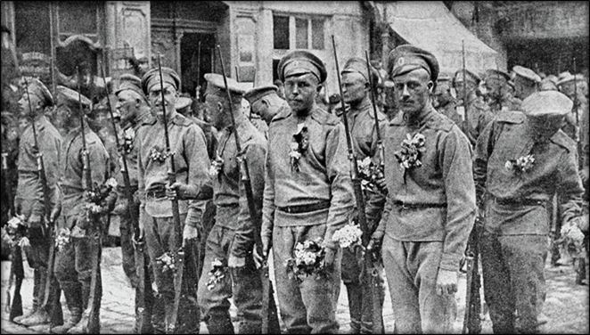
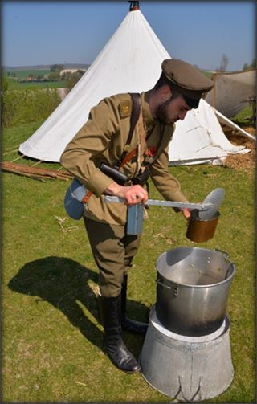
A l’occasion du centenaire de la première guerre mondiale et dans le cadre des journées de l'Histoire et de l'International, la ville de Reims a proposé un ensemble d'évènements et de commémorations du 7 au 9 avril 2017.
Dans le cadre de ces festivités, le dimanche 9 avril fut la journée dédiée au centenaire de la 1ère Guerre mondiale en hommage aux troupes Russes, des 1ère et 3ème BRS (Brigade Russe Spéciale) qui se sont courageusement illustrées dans la région de Reims, fin 1916 et début 1917 et notamment au Fort de La Pompelle qui subira à cet époque un déluge d’obus allemands dont on voit encore aujourd’hui les séquelles des cratères.
Ces commémorations ont commencé par une belle reconstitution historique au fort de La Pompelle - par un beau temps sec et clair alors même qu’il y a cent ans le temps était terriblement froid et neigeux –proposée par l’association « Le Poilu de la Marne » donnant un écho visuel à ces commémorations et rendaient un vibrant hommage au corps expéditionnaire Russe sur les terres de Champagne.
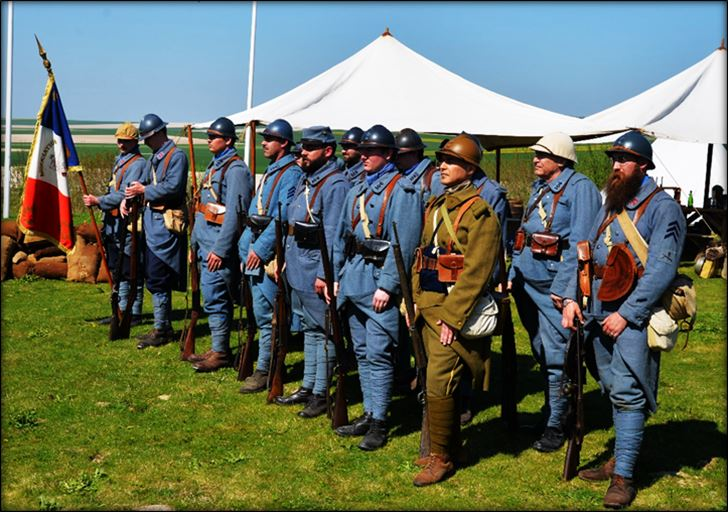
Reconstitution historique de soldats russes et français de 14-18 par l’association « Les Poilus de la Marne » (*)
RAPPEL HISTORIQUE DU FORT DE LA POMPELLE
Il convient de rappeler pour ceux qui ne sont pas de cette région de Champagne que le fort de La Pompelle était l'un des nombreux forts défensifs construits en 1874 autour de Reims après la guerre de 1870 dans le cadre de la ceinture fortifiée, dite « système Séré de Rivières » (du général du même nom) et construite pour défendre la ville. Désarmé en 1913, comme de nombreux autres forts (pour récupérer les canons qui le défendaient) le fort fut occupé sans combat dès le début de la guerre par les Allemands le 4 septembre 1914. Il sera reconquis par des soldats français du 138ème Régiment d'Infanterie, le 24 septembre 1914, après la victoire de la bataille de la Marne. A ce moment - et à l’image de ce que seront ensuite les forts de Verduns - le Fort de La Pompelle jouera un rôle prédominant dans la défense du secteur de Reims qui subira pourtant un véritable martyr par la violence des bombardements allemands, qui la détruiront à 80 % ! Toutefois le courage et la volonté des hommes du fort parviendra à contenir les assauts successifs de l'armée allemande avec l’aide de 185 régiments français et de 2 brigades spéciales russes, envoyées par le tsar Nicolas II en 1916. Au plus fort des combats c’est environ 2.000 hommes alliés franco-russes qui seront présents dans le fort dans des conditions de vie épouvantables. Toutefois, le fort de La Pompelle, à l’inverse des autres forts de la ceinture de Reims, ne sera jamais repris par les allemands, leur barrant un peu plus la route de Paris !
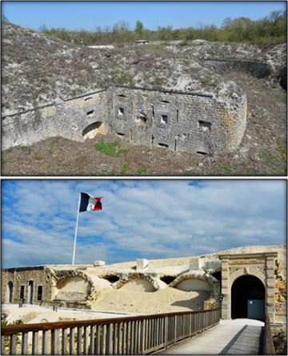
Le fort de La Pompelle sur les hauteurs de Reims (*)
JOURNÉE COMMÉMORATIVE FRANCO-RUSSE DU 9 AVRIL 1917
C’est auprès de ce fort historique que la Mairie de Reims et l’ambassade de Russie en France ont conjointement décidées de commémorer cette fraternité d’arme qui a unis dans une même souffrance les soldats russes et français il y a tout juste un siècle. Le point d’orgue de cet hommage s’est articulé au fort de La Pompelle auprès duquel a été érigé en 2012 un monument entouré des drapeaux russes et français qui rappelle la présence des 1° et 3° Brigades Spéciales du Corps Expéditionnaire Russe auprès de leurs frères d’armes Français de 1916 à 1917. Le monument comporte en son centre, une plaque de marbre noir, sur laquelle le texte (en français et en russe) gravé en lettres dorées, rappel : « La mémoire des soldats des 1ère et 3ème Brigades Spéciales du corps expéditionnaire Russe qui se sont battus sur le sol de la Champagne en ces lieux, au côté des troupes françaises du 7 juillet 1916 au 19 avril 1917. La ville de Reims reconnaissante avec le concours de l’ambassade de la Fédération de Russie en France ».
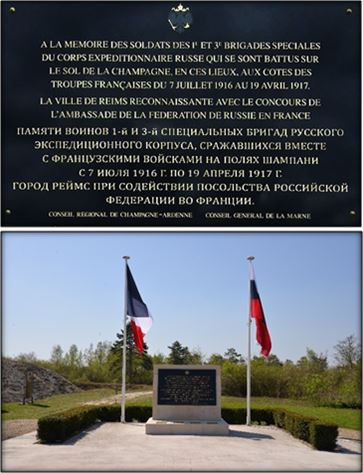
Monument aux soldats des 1° et 3° BSR au fort de La Pompelle (*)
UN VIBRANT HOMMAGE À L’AMITIÉ FRANCO-RUSSE EN PRÉSENCE DES CHŒURS DE L’ARMÉE ROUGE
C’est aussi devant ce monument, que les dépôts de gerbes par les autorités présentes, furent magnifiquement accompagnés des Hymnes russe et français chantés a capella par les 35 chanteurs présents des Chœurs de l’Armée Rouge (Ensemble officiel académique de la Garde nationale de Russie sous la direction du général Victor Eliseev) en présence de familles de plusieurs anciens combattants russes de ce théâtre d’opération. Le député-maire de Reims, M. Arnaud Robinet en profita pour rappeler dans son discours le sens de l’histoire dans la dimension de l’amitié franco-russe d’hier, d’aujourd’hui et de demain, auquel répondait par un vibrant hommage de l’amitié entre nos deux peuples, Monsieur l’Ambassadeur, délégué permanent de la Fédération de Russie auprès de l’Unesco, S.E. Alexander Kuznetsov. La présence de cet ambassadeur montrait par la même, qu’après des années d’occultation sous le régime communiste, la Russie de Vladimir Poutine a décidé de renouer avec son passé Tsariste !
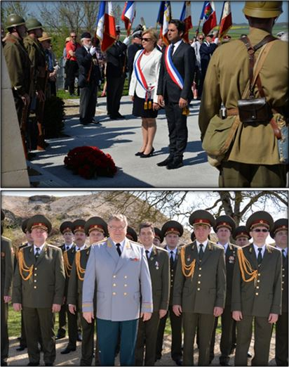
Le Député-Maire de Reims, M. Arnaud Robinet et Mme la Députée, Présidente de Reims Métropole Catherine Vautrin en présence des Chœurs de l’Armée Rouge dirigés par le charismatique général Viktor Eliseev (*)
Après la cérémonie devant le monument aux morts, une ballade historique autour du fort de La Pompelle fut proposée aux familles de descendants Russes et des rémois présents. Pendant le parcours proposé, des haltes étaient prévues autour d’images de soldats russes, ponctuées de lecture de textes (en russe et en français) et de témoignages de combattants russes tiré de l’émouvant journal de campagne du soldat Sergueï Ivanov de la 1ère Brigade Russe, le tout agrémenté de chants traditionnels des Chœurs de l’Armée Rouge. A chaque halte, un œillet rouge était déposé, un geste simple en mémoire des soldats russes tombés ici.
HYMNES À LA CULTURE RUSSE ET À LA VILLE DE REIMS
En fin d‘après-midi les rémois et leurs amis russes, furent invités à inaugurer au musée Saint Remi une maquette de l’ensemble monumental offert par le Centre de Russie pour la Science et la Culture dont les travaux seront réalisés en novembre 2017, par le sculpteur Michel PALEOCAPP, sur une réalisation de André Tyrtyshnikov, membre de l’Académie des Arts de Russie. Ce monument sera situé dans le jardin du musée Saint Remi, il représentera le Tsar Pierre Le Grand lisant l’évangéliaire de Reims devant l’Archevêque-Duc de Reims, Mgr François de Mailly dans l’Abbaye de Saint-Remi lors de sa visite à Reims le 22 juin 1717.
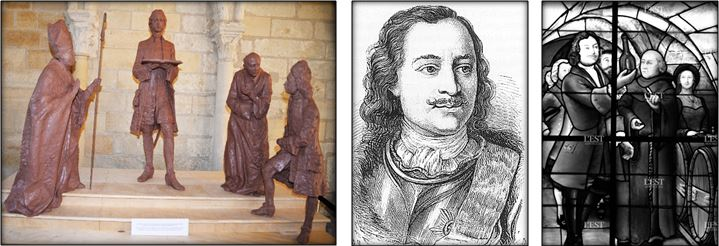
Monument de la visite de Pierre Le Grand à Reims en 1717, qui n’oubliera pas de visiter les caves de champagne !
Les autorités furent ensuite invitées à découvrir un exceptionnel Evangéliaire Slavon enluminé du XIVème siècle qui fut offert à la bibliothèque Carnegie (près de la cathédrale de Reims) lors des cérémonies du 300ème anniversaire de la venue à Reims de Pierre le Grand. Une fois de plus l’histoire de Reims et de la Russie se croissait !
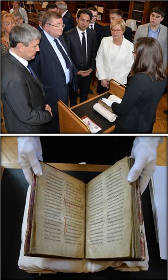
Evangéliaire du XIV° offert par Pierre Le Grand à la ville de Reims
La journée devait magnifiquement se terminer par un concert exceptionnel, a capella, des Chœurs de l’Armée Rouge à la Basilique Saint-Remi ou tous les rémois étaient gratuitement invités (dans la limite de 2 personnes par famille) à découvrir ces magnifiques chants symboliques de l’âme slave, dont ce remarquable ensemble est l’un des meilleurs ambassadeurs dans le monde !
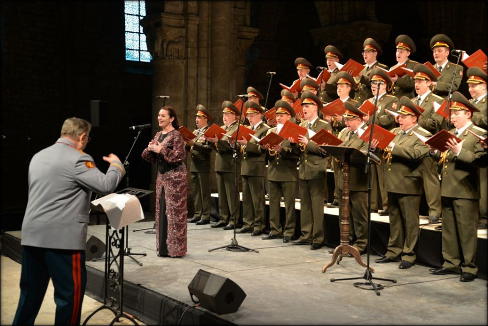
Les chœurs de l’Armée Rouge dans la Basilique Saint-Remi de Reims : Etrange rendez-vous historique !
LE CORPS EXPÉDITIONNAIRE RUSSE EN FRANCE
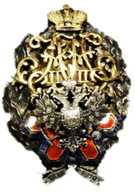
Insigne de la BSR offert par le TsarCette cérémonie sur les terre de Champagne doit nous rappeler que même si la présence des alliés russes au côté de la France pendant le premier conflit mondial passe souvent derrière l’engagement britannique puis américains, il ne faut pas oublier l’immense sacrifice des soldats impériaux sur le front de l’est, mais aussi, fait historique moins connu, leur engagement sur le front de l’ouest auprès des troupes de l’armée française ! L'idée d'un corps expéditionnaire Russe sur le front occidental date de la fin de l’année 1914. A la suite d’une mission dirigée par Paul Doumer (1857-1932) à l’époque président de la Chambre des Députés (et futur 14ème Président de la république française de 1931 à 1932), celui-ci obtient en Décembre 1915 la promesse du Tsar Nicolas II qu’il enverrait des troupes dans le cadre de l'aide interalliée et au nom de l’Alliance Franco-Russe signée en 1892.
(Pour l’anecdote on notera que le Président Doumer sera assassiné à Paris le 6 mai 1932 par Pavel Timofeïevitch Gorgoulov (1895-1932) prétendu médecin russe d’origine caucasienne et vivant en France. Ce Gorgoulov était un ancien combattant russe sur le front occidental, qui s’engagea ensuite au sein des Armées Blanches. Il assassina le président de la république française, pour se venger de la France, qui n'avait pas voulu intervenir en Russie contre les Bolcheviks entre 1917 et 1922. Il sera guillotiné en 1932 après un procès à Paris).
Fidèle à sa promesse, le Tsar Nicolas II, chargea donc son état-major représenté par le général d’infanterie Mikhaïl Vassilievitch Alekseïev (1857-1918) de former dès janvier 1916 la 1ère brigade spéciale d’infanterie, composée de deux régiments (fort chacun de trois bataillons), sous le commandement du général-major Nicolaï Alexandrovitch Lokhvitzky. Le Tsar exigea à cette occasion que la plupart des officiers parlent le
Français et imposa une sélection physique pour la troupe similaire à celle de la Garde. Le recrutement du 1er Régiment, commandé par le Colonel Netchvolodoff se fit dans la région de Moscou et comportait de nombreux ouvriers et celui du 2nd régiment, commandé par le colonel Diakonoff recruta dans la région de Samara avec une forte proportion de paysans. Les recrues devaient être volontaires pour l’expédition en France, avoir entre 21 et 25 ans et savoir lire et écrire.
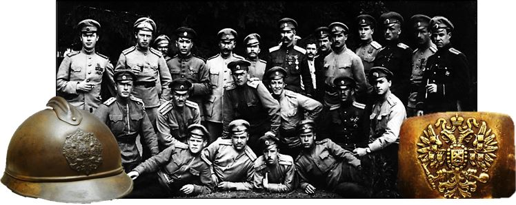
Officiers du 6ème Régiment d'Infanterie de la 3ème Brigade Spéciale Russe (Casque Adrian et plaque de ceinturon russe en 1914-1917)
Les 20.000 recrues russes arrivèrent à Marseille le 11 avril 1916 puis furent envoyés au camp de Mailly (entre l’Aube et la Marne) ou ils reçurent le fameux casque français Adrian (marqué d’un aigle bicéphale) et se familiarisèrent avec le matériel et l’armement français. C’est du camp de Mourmelon (près de Reims également) que la 1ère Brigade Spéciale Russe montera en ligne dès juin 1916 à Aubérive rejoignant ainsi la 3ème brigade dont elle assurera la relève d’octobre 1916 jusqu'au début de 1917. C’est à cette date que la BSR occupera, notamment, le fort de La Pompelle.
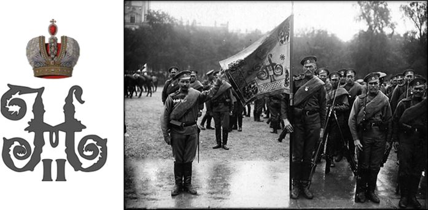
Le drapeau du 2ème régiment de la 1ère brigade spéciale russe sur les Champs-Élysées lors du défilé du 14 juillet 1916. On reconnaît, au centre du drapeau, le monogramme impérial « H II » pour Nicolas II (le visage du Christ était peint sur l’autre face du drapeau). Le porte-drapeau du régiment, Vassili Sablitzeff, est reconnaissable à sa grande taille ! Essentiellement composé d’ouvriers de la banlieue de Moscou cette brigade se mutinera après les évènements en Russie fin 1917.
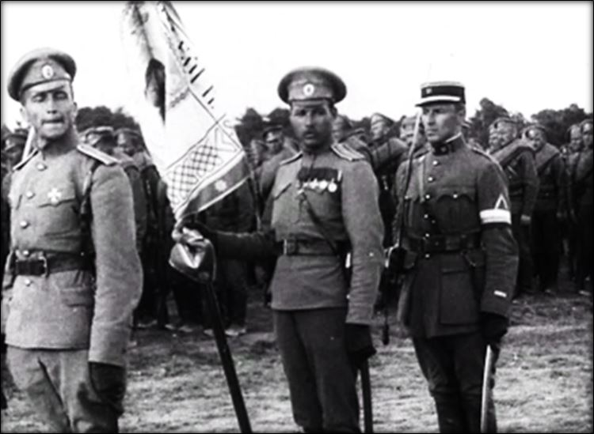
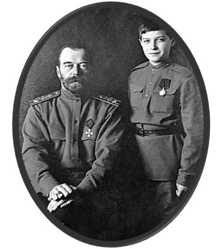
S.M. Nicolas II Tsar de toutes les Russies, roi de Pologne et grand-prince de Finlande et Le grand-duc et tsarévitch Alexis Nikolaïevitch de RussieLe drapeau de la 3ème Brigade du Corps Expéditionnaire Russe. Le 2ème régiment à inverse du 1er était essentiellement composé de paysans, recrutés dans la région de Samara (au bord de la Volga, à 860 km au sud-est de Moscou et non loin de la frontière avec le Kazakhstan). Ceux-ci resteront loyaux au gouvernement de transition au moment des évènements de la révolution bolchevick et certains rejoindront même les Armées Blanches qui combattra l’Armée Rouge jusqu’en 1922.
L’HÉROÏSME DES BRIGADES RUSSES SPÉCIALES
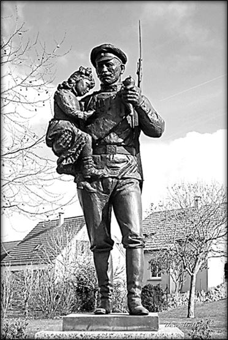
Monument aux soldats russes du corps expéditionnaire de 1917 à Courcy (Marne), inauguré en 2015En avril 1917, les quatre régiments seront rattachés à la 5ème armée française du général Mazel afin de participer à l'offensive Nivelle (qui fut un sanglant échec). Le 16 avril, les Russes attaqueront les positions allemandes au nord-ouest de Reims et en deux jours, ils prendront les ruines de Courcy, la cote 108, le Mont Spin, Sapigneul et captureront un millier de prisonniers, résistant aux contre-attaques. Le 20 avril, ils seront relevés par des unités françaises, après avoir perdu 70 officiers et 4.472 hommes tués, blessés ou disparus. Pour ces faits d'armes, les 1ère et 3ème brigades seront citées à l'ordre de l'Armée. Après les attaques du front de Reims, les survivants seront évacués puis regroupés au camp de Neufchâteau. Le passage des soldats de la BRS sur la commune de Courcy (située à 15 Km au Nord-Ouest de Reims) qui fera, a elle seule, plus de 800 morts dans leur rang, a d’ailleurs été commémoré en avril 2015 par un superbe monument au soldat Russe relativement rare en France (photo ci-contre) en présence du ministre russe de la culture et du sculpteur Aleksandr Tatarynov. Le courage des soldats russes n’a pas non plus été oublié dans la mémoire des français, en témoigne ce merveilleux récit de Robert Clément écrit en avril 2007, dans le Bulletin de la Commune de Courcy à l’occasion des 90 ans de la bataille qui délivra la ville de l’occupant allemand :
« Quand le 1er Bataillon du 1er Régiment (Russe) chargé d'enlever Courcy arriva devant les premières maisons du village ou plutôt devant les premières ruines, la progression se trouva, un instant, arrêtée. Quelques mitrailleuses solidement casematées avaient échappé à nos projectiles et, se révélant tout à coup, essayaient de briser la vague. Le Commandant du Bataillon comprenant qu'il était difficile de forcer l'obstacle, le contourna et Courcy attaqué par le Nord tomba bientôt entre nos mains en même temps que le château. A droite le bataillon chargé de s'en aller jusqu'au canal pour se mettre en liaison avec la 151ème division d'infanterie au niveau des Cavaliers se trouva subitement à hauteur du moulin de Courcy contre un réseau de fils de fer barbelés en relatif bon état. Il protégeait un fortin appelé « ouvrage rectangulaire ». Celui-ci abritait cinq ou six mitrailleuses et recelait une trentaine d'Allemands au maximum. En dépit de tout l'héroïsme déployé, le bataillon ne put aller plus loin. Un nouveau bataillon arriva dont le sacrifice immédiat d'une partie de son effectif n'amena pas un meilleur résultat. C'est en vain que se firent tuer les capitaines Yanschkevitch, Iklinof et tant d'autres qui payèrent de leur vie leur superbe bravoure. Le fortin entendait entraver notre avance. Les Russes du 2ème Bataillon qui occupaient Courcy se trouvaient pendant ce temps en butte aux coups de canons allemands et aux mitrailleuses installées à la verrerie de Courcy au-delà du canal, qui n'avait pu être franchi.
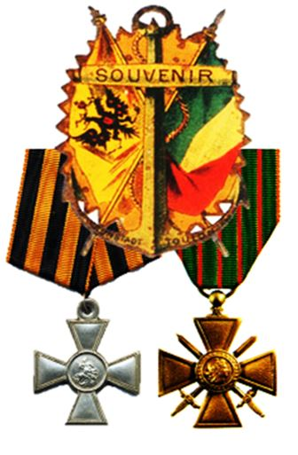
Des caves, dans le village encore plein d'ennemis, partaient également de terribles fusillades qui parfois prenaient pour cible des soldats russes blessés allant vers un poste de secours. La situation n'était pas des plus aisées. Mais les Russes qui avaient conquis le village n'entendaient pas le lâcher et ils tinrent malgré tout. Aux mitrailleuses des caves, ils répondirent à coup de grenades et cela réussit dans la plupart des cas. Il y eut dans ces combats qui, durant deux jours se prolongèrent dans les rues de Courcy, des épisodes très épiques. Ainsi le Sapeur Silitch Daniel de la 6ème Compagnie du 2ème Régiment voyant sortir quelques Allemands d'une cave, ordonna au premier de faire « Kamarad ». Pour toute réponse celui-ci lança une grenade ; l'engin manqua son but car Silitch qui avait vu le geste avait fait un bon de côté. Mais la réplique fut foudroyante. D'un coup de baïonnette, Silitch se débarrassa de son adversaire. L'argument fut déterminant pour les Allemands qui suivaient. Ils étaient cinquante. Ils firent tous « Kamarad » et triomphalement Silitch les amena au Général Lohvitzky. Une telle prouesse valait bien la croix de guerre et la médaille de Saint-Georges. Le Commandant de la 1ère Brigade Russe Spéciale remit sur le champ au valeureux soldat les deux décorations (Photo ci-contre). »
UNE ÉPOPÉE RATTRAPÉE PAR DE TRAGIQUES ÉVÈNEMENTS
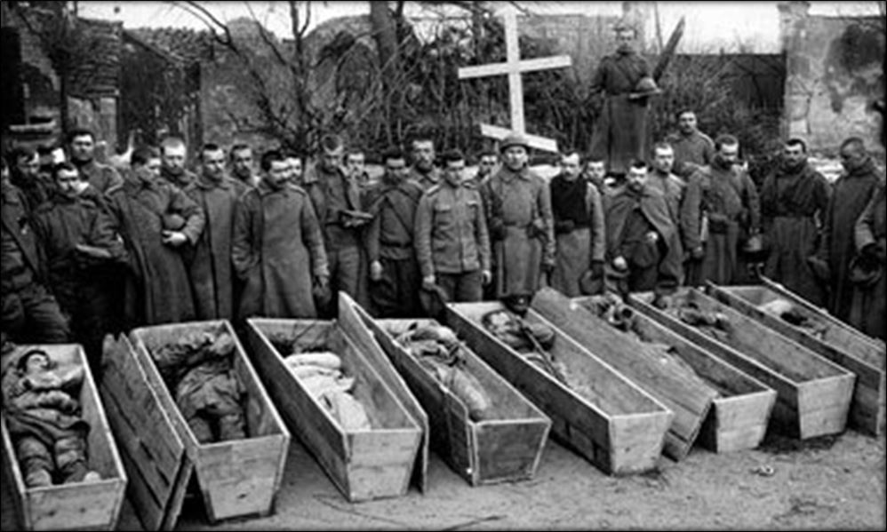
Premiers soldats russes du 6ème Régiment tués au Fort de La Pompelle
Mais l’épopée des soldats russe de la Brigade Spéciale sera rattrapée par l’Histoire et le Tsar de Russie ayant abdiqué le 15 mars, les troupes russes stationnées en France prêteront spontanément serment le 13 avril 1917 au nouveau gouvernement russe provisoire, formé par Kerensky. Malgré cela, les esprits s'échauffèrent parmi les combattants dont certains se constitue en «comité de soviets de soldats » et les BRS vont se scinder en pro bolchevicks ou en loyalistes ! Devant cette situation d’instabilité, le Grand-Quartier Général (GQG) de l’Armée française qui craignait une contagion des idées révolutionnaires au sein des troupes Françaises, va alors décider d’éloigner les soldats russes pour les regrouper au camp de La Courtine, dans la Creuse, non loin de Reims et où 16.000 hommes et 290 officiers s’installeront dès début juillet 1917. Mais rapidement la 3e brigade, en majorité loyaliste, sera installée au village de Felletin, une commune de la Creuse limitrophe de 25 Km de la Courtine, à la suite de plusieurs incidents avec ceux de la 1ère brigade. En effet, les soldats de la 1ère Brigade, pro bolchevick (car on l’a vu, plus ouvrière) se mutinèrent, renvoyèrent leurs officiers et créèrent des « soviets de soldats » élisant leurs propres chefs. Le camp de la Courtine devient alors un camp auto géré avec 10.000 soldats qui exigeaient de rentrer en Russie communiste. Après négociations la mutinerie est matée le 16 septembre 1917 par un régiment d’artillerie russe loyaliste qui tirera au canon de 75 sur les mutins communistes et arrêtera leur chef. C’est à ce moment, que le gouvernement français offrira trois possibilités aux mutins russes : 1/ Se porter volontaires comme travailleurs militaires (11.500 acceptèrent), 2/ Etre envoyé en Algérie pour les réfractaires (5.000) et s’engager dans l’armée français (250 firent ce choix). Les autres, malades ou blessés furent affectés dans divers services.
L’épopée du Corps Expéditionnaire Russe se terminera avec près d’un millier d’officiers, sous-officiers et soldats tsaristes qui s'engageront dans une Légion des Volontaires Russes (LVR) équipée et armée par la France, à partir du 27 Décembre 1917 et commandée par le général Goutoua. Ce bataillon sera affecté à la Division marocaine du général Daugan et s'illustrera par son courage en 1918 lors des batailles de la Somme, du Soissonnais, du Chemin des Dames (où sera tué, à Terny-Sorny, leur aumônier, le prêtre André Bogoslovsky). En mai 1918, Ce bataillon perdra 85 % de ses effectifs devant Soissons. Cité deux fois à l'ordre de l'armée, le bataillon gagnera la fourragère de la Croix de Guerre. Après l'armistice, il occupera le secteur de Mannheim, en Rhénanie jusqu’à son rapatriement à Odessa en 1919 date à laquelle, l’histoire perdra leur trace dans les méandres de la révolution bolchevick qui imposera en Russie un régime de mort et de terreur pendant plus de 70 ans ! C’est un peu tout cela que ces journées commémoratives rappelaient à Reims en avril dernier…
Bibliographie :
Ville de Reims. Journées de l'Histoire et de l'International – Avril 2017.
Les Brigades Russes en France. Passion militaria.com – Juin 2013.
Les Brigades Russes Spéciales. Journal du petit-fils d’un soldat du corps expéditionnaire russe en 1916 : Simon Rikatcheff . Jean-Paul Ancier - Janvier 2015.
Les soldats russes au Fort de la Pompelle. Jean-Pierre Husson CNDRP (2000-2016).
Les brigades russes dans les archives de la Guerre. Sources de la grande guerre.fr - 2013.
La Brigade Russe à Courcy. R. Clément. Bulletin Communal de Courcy - Avril 2007.
Wikipédia : Le corps expéditionnaire Russe, Le Fort de La Pompelle, Général Alekseïev, Pavel Gorgoulov, Paul Doumer.
(*) Les photos couleurs de cet article ont été prises par mon excellent ami Jérôme de HORSCHITZ, photographe professionnel, accrédité auprès du Groupement de Gendarmerie de la Marne et Président du Comité d’Epernay des Amis de la Gendarmerie. Vous pouvez le contacter au : 06 20 56 70 26 – jerome.horschitz@sfr.fr
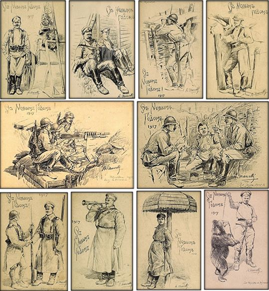
Superbe collection de cartes sur les Brigades Russes Spéciales en France (1917 – dessins d’A. Marcelli)
Partager cette page